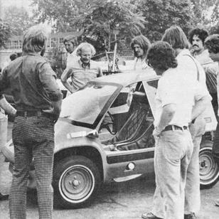

The Shuttlebug
November/December 1975
THE SHUTTLEBUG - with driver and passenger - makes a test run (right down the street with the big fellows) in Detroit.
by THE Mother Earth News(restricted)
For new readers of this publication, the SHUTTLEBUG is a two-place, ultra-light (860 pounds) urban vehicle. The little car is designed (if the computer can be believed) to deliver a maximum of 54 miles per gallon of regular gasoline when driven at a steady 55 miles per hour. It's also an attempt at making a very small automobile as safe as possible (the car has a heavy roll bar over the cabin, 2 X 4 inch steel box beams along the sides of the driver/passenger compartment, and a front end calculated to progressively collapse-thereby safely dissipating as much energy as possible-in a head-on collision).
Currently, the original SHUTTLEBUG prototype is being tested with a 16-hp Tecumseh industrial engine for a power plant and a special torque converter-equipped with a reverse gear of our own design-in the driveline. Although this combination does produce acceptable off-the-line acceleration and all the "no shift" characteristics of an automatic transmission, we're not at all happy with the noise and vibration produced by the power package/drive train combination. We expect to try another engine in the car very soon.
We're also changing the design of the cabin to "build in" more footroom without altering the vehicle's body shell in any way. And we've got some ideas for further simplifying the construction of that already-simple body.
Which is to say that the SHUTTLEBUG development program is proceeding about the way such programs usually proceed: We expect to completely rebuild the car approximately three more times before all the bugs are ironed out and we have everything just the way we want it.
General reports on this work will continue to appear in THE Mother Earth News (restricted) from time to time. Really detailed information about the progress (or lack of it) made on the BUG, however, would take up far too much of this magazine's space. For that reason up-to-the-minute test reports, photographs of the car as it is progressively refined, announcements of manufacturing dates, performance figures, vehicle specifications, delivery schedules, etc., will be published in a newsletter devoted exclusively to the little car.
If you'd like a charter subscription to this newsletter-plus a special information packet about the automobile-send $6.00 and your name and address to Shuttlebug Engineering, P.O. Box A, East Flat Rock, North Carolina 28726. Your support will help make the SHUTTLEBUG a reality!
 |
 |
|